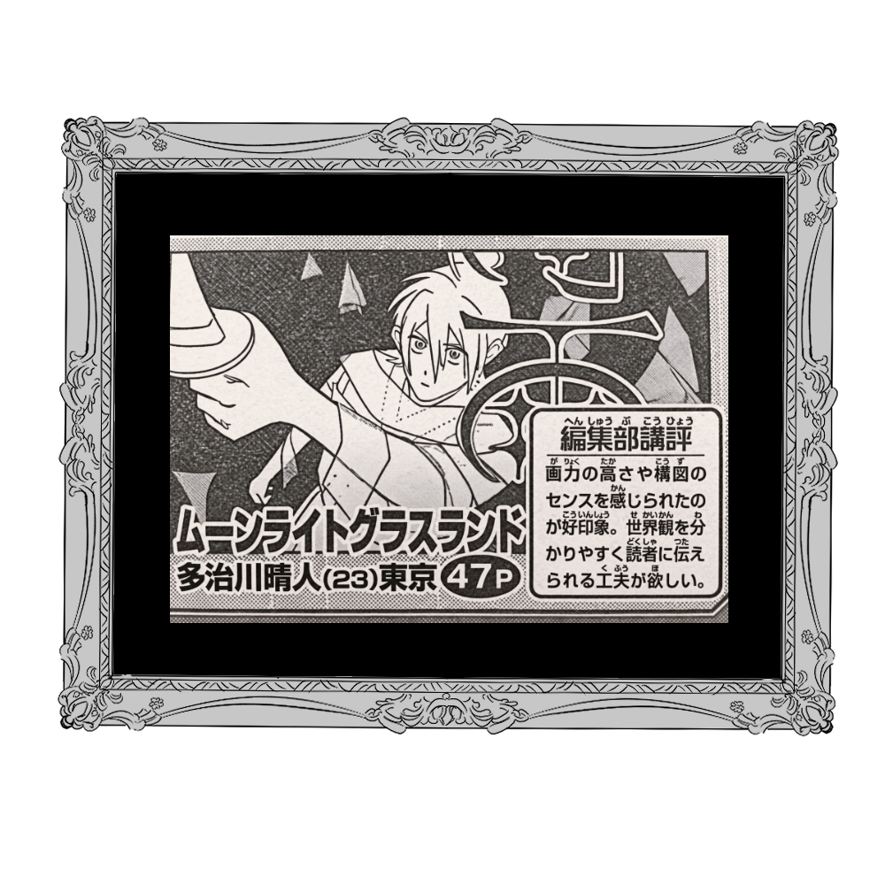
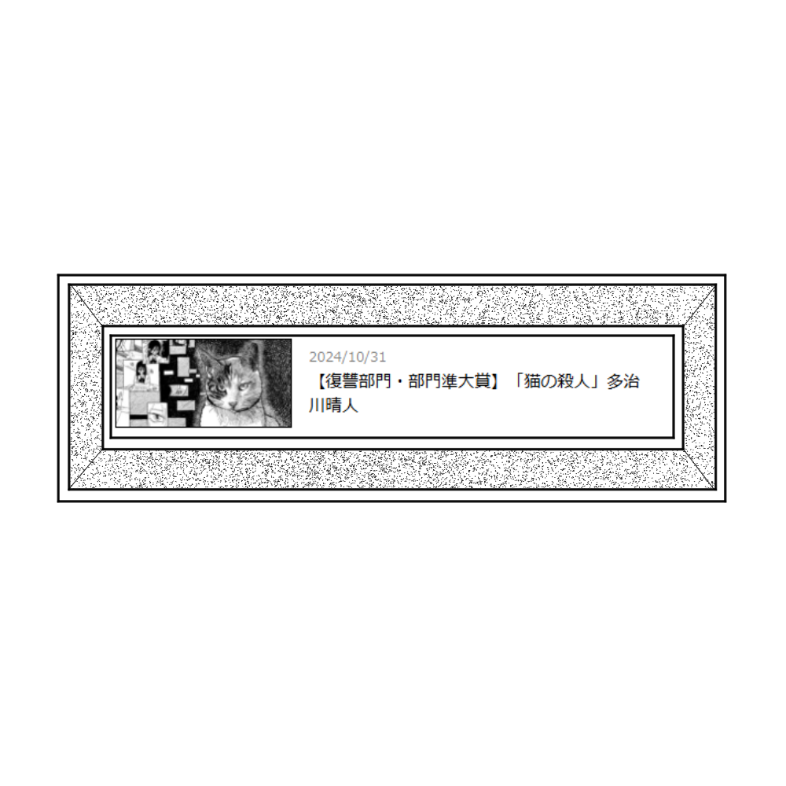

24/06/04 個人サイトを立ち上げました
これから先活動する際お知らせをする手段や見てもらう機会が
YouTube ch以外にないのは不便だという事で個人サイトを立ち上げました
漫画落書き置き場としても活用していきたいと思います
24/06/04 個人サイトを立ち上げました
これから先活動する際お知らせをする手段や見てもらう機会が
YouTube ch以外にないのは不便だという事で個人サイトを立ち上げました
漫画落書き置き場としても活用していきたいと思います
24/10/31 『猫の殺人』が集英社青年漫画大賞復讐部門準大賞を受賞いたしました

25/03/03 『ムーンライトグラスランド』が新世界漫画賞第93回にて最終候補一歩手前になりました
